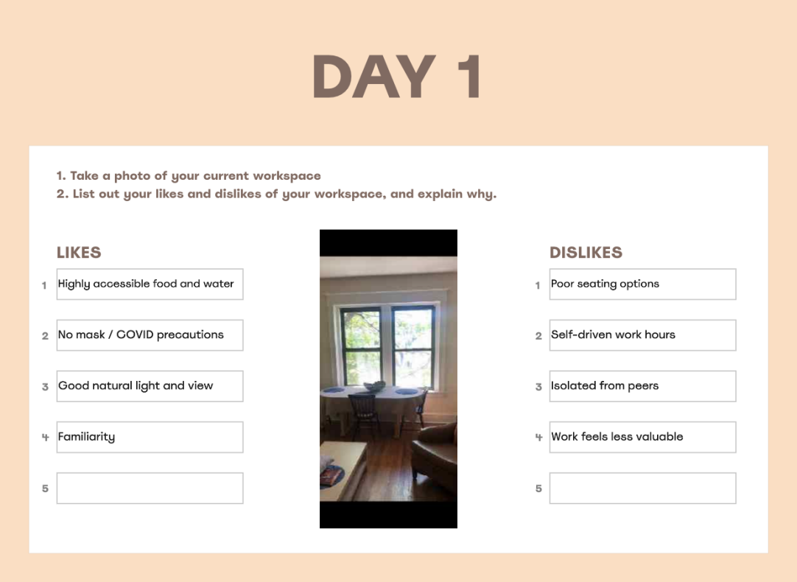
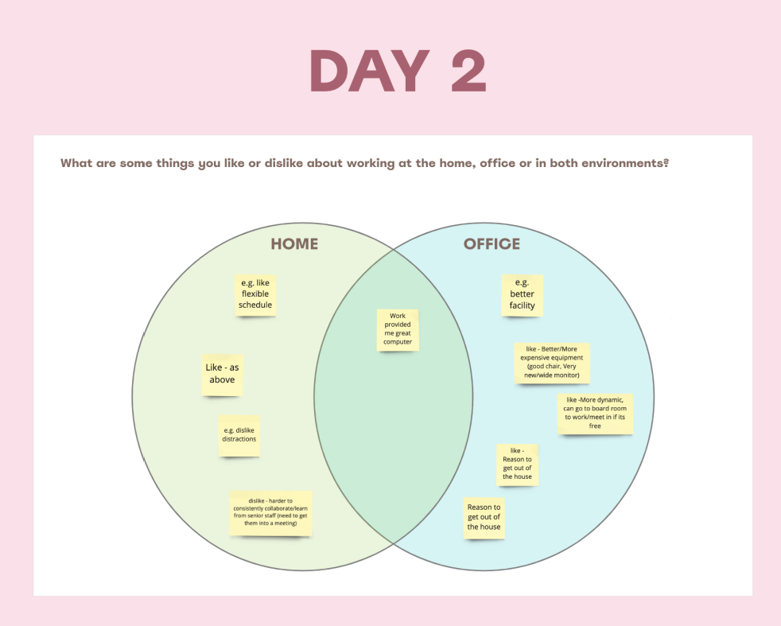
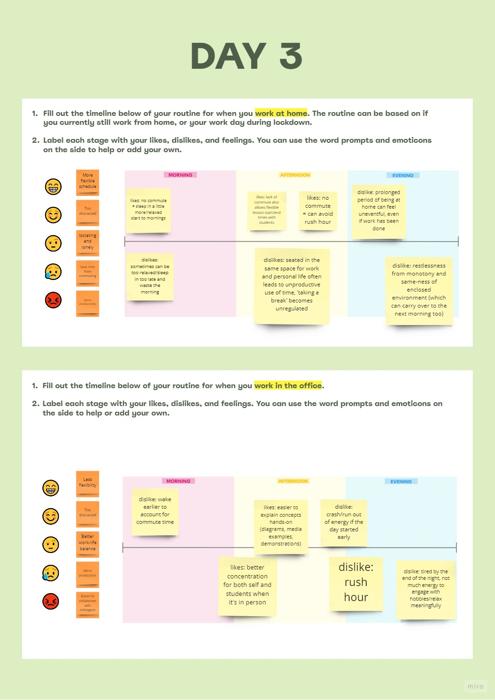
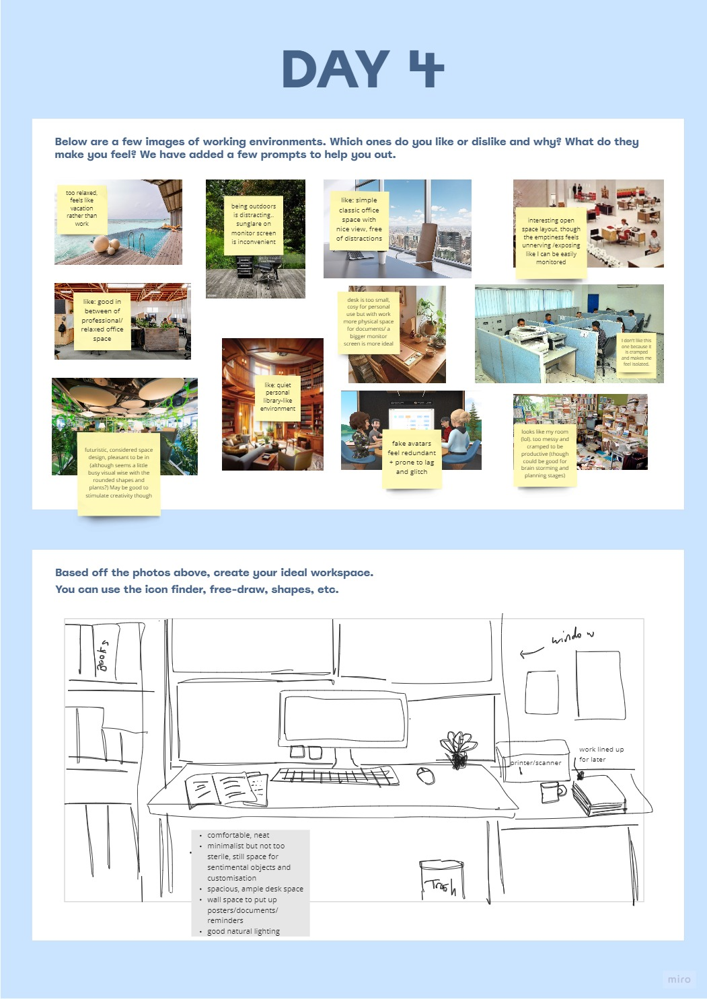
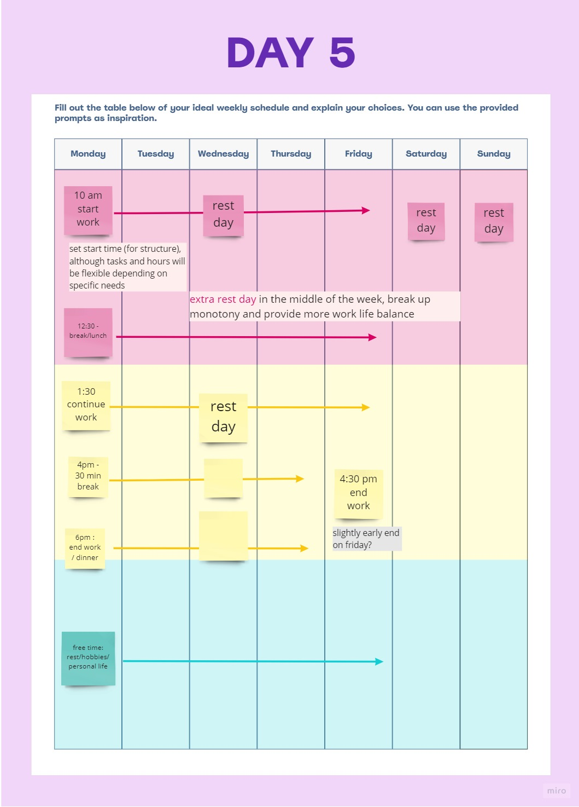
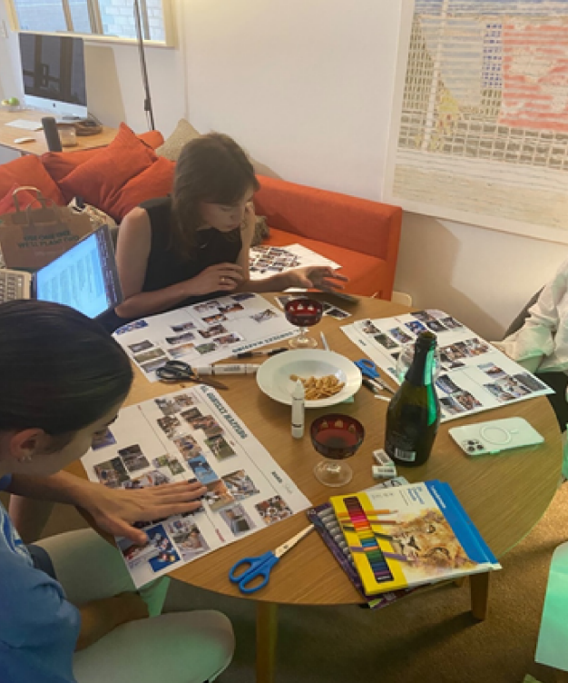
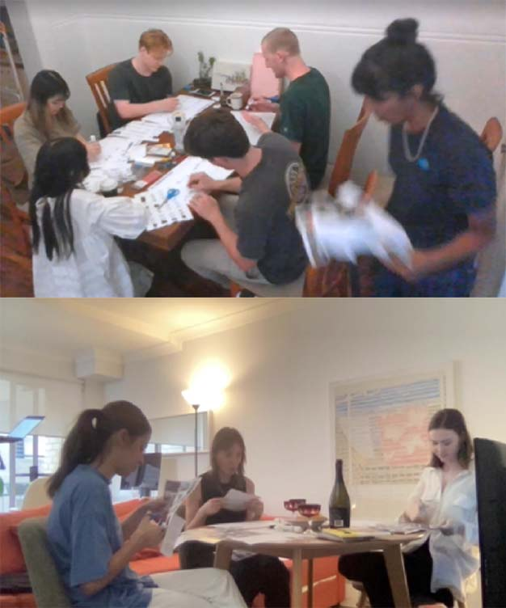
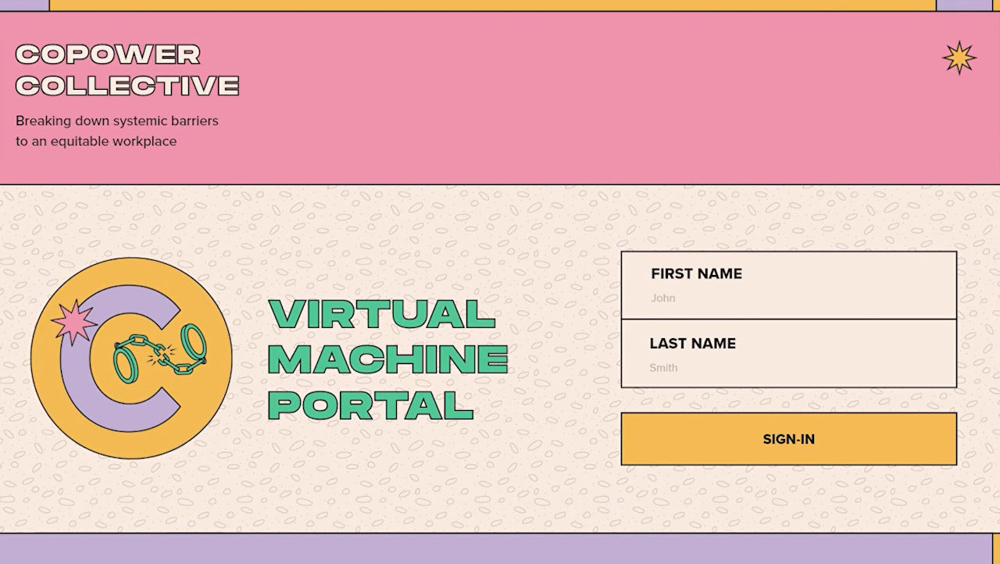
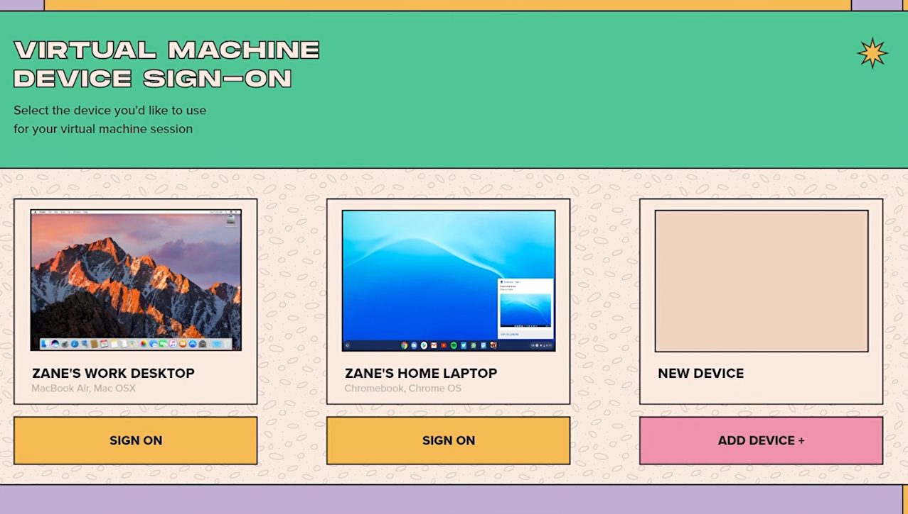

MAR 2022 - MAY 2022
SYDNEY, NSW
Office Or Not: Service Design
DESCRIPTION
Throughout the COVID-19 pandemic, some people have thrived during the transition to telework. For others, working from home was not an option.
Copower Collective is an affordable co-working platform that seeks to dismantle these workplace inequities, and re-define the concept of a home office.
The final evolution of the concept succeeds several months of exhaustive user research, ideation and iteration, as part of a joint investigation with colleague Yasmine Keong.
🡵 View Pitch Deck
PROJECT TYPE
University Project
PROJECT ROLE
TOOLKIT
Design Brief
PROJECT OBJECTIVE
Our design team was tasked with designing a digitally-focused user experience focused on "the new workplace". In short, what should the new 'office' look like, moving forward, to ensure an equitable working environment for everyone?
Our deliverable also required both physical and digital touchpoints, given the hybrid nature of its use context.
Research Introduction
RESEARCH OBJECTIVE
What are the knowledge, attitudes, and behaviour of younger people (18-25) towards the inequities in the workplace in light of COVID-19?
WHY THIS OBJECTIVE?
The COVID-19 pandemic has exposed the multiple failures of capitalism by amplifying preexisting systemic inequalities. While allowing some people to thrive from remote work, those of low income, racialised, gendered, and disabled backgrounds are unable to access the technology and housing necessary to make telework feasible.
TARGET AUDIENCE
We aimed to examine this within the younger generation (age 18-25), as they are the most impacted by economic pressures such as low wage growth and the housing crisis, placing them at the crux of systemic equity in the workplace (Wood & Griffiths, 2019).
Research Questions
1
What are the factors that make people disadvantaged in the workspace?
2
What are the positive and negative impacts of working from home and the office?
3
How can we leverage the benefits of working online and offline to make an equitable workspace?
Our team collaborated on a Miro board to formulate sensitising and context-mapping exercises based around our research questions.
Sensitising Exercises
WHY CONTEXT MAPPING?
Studying the primary context of product use can challenge the biases of the designer and foster user empathy,
resulting in a human-centred and innovative product (Visser, Stappers, Lugt, & Sanders, 2007).
This involves
democratising the design process through generative and participatory techniques, seeking to
design with users to understand their current and future concerns.
WHY SENSITISING ACTIVITIES?
The sensitising process seeks to prepare users for the group session to ensure the extraction of
rich qualitative and quantitative information (Visser, Stappers, Lugt, & Sanders, 2007).
This involves exercises aiming to elicit inspirational reflections on past, present, and future experiences
of working from home compared to the office (Tomitsch et al., 2021).


Figure 1: Day 1 (Q1) exercise. To attain strong visual evidence of user experience, this exercise involved users taking photos of their workspaces and listing out their likes and dislikes.
Figure 2: Day 2 (Q1) exercise. We utilised a Venn diagram comparing office and home spaces, allowing us to easily deduce the advantages and disadvantages of various work modes.
FORMULATING SENSITISING ACTIVIITES
The exercises were to be completed over five days, seeking to harness concrete and abstract
thinking to sensitise users of their explicit and implicit needs (results in appendix E pg. 8).
We utilised playful colours, colloquial
language, and various images to strike a balance between casual and professional, encouraging
free reflection while also ensuring users carried out the activities properly (Visser, Stappers, Lugt,



Figure 3: Day 3 (Q2, Q3) utilised cognitive maps of users filling out a timeline of both their remote and office workday, along with reflections of their emotions at each stage.
Figure 4: As generative techniques ultimately aim to address implicit needs through eliciting users' aspirations, Days 4 & 5 provoked participants to imagine their ideal workspace.
Figure 5: Day 5 (Q3) encouraged participants to fill out the table below of their ideal weekly schedule and explain their choices.
Context-Mapping Sessions
SESSION PREPARATION
We chose 7 participants relevant to our research objective, as they were within our young age demographic of 18-25.
Additionally, each had occupations that were affected by remote work to varying degrees
(e.g. software engineer to piano teacher), with income ranging from 30k-80k a year.
We carried out several sessions at our houses and set up cameras (with participant consent) obscurely around the
room to record the data. We prepared a script and schedule for each 2-hour session.


Following generative principles, we created three exercises where the participants designed artefacts and verbally reflected on the finished product. The activities progressively layered from concrete to abstract, slowly accessing deeper levels of knowledge to enhance the contextual data (Visser, Stappers, van der Lugt, & Sanders, 2007).
Data Analysis
OUR PROCESS
The sessions and sensitising exercises produced layered but unstructured data that demanded a
bottom-up analysis.
The first stage of analysis involved gathering the transcripts, videotapes, collages, and
workbooks, and then searching through all the data to record key quotes.
After gathering the data, we made statement cards and reorganised the information
according to key themes and the research questions that pertained to it.
Statement Cards
Research Questions: Insights
QUESTION 1
Factors Driving Workplace Disadvantages
The intersection between financial, technology, healthcare and housing privileges determines how disadvantaged an individual is in the workplace. Those able to work remotely are more likely to be financially privileged as these occupations are usually white-collar jobs.
QUESTION 2
Impacts of Remote Work
The largest impact of remote work is the dissolution of work-life boundaries and increased social isolation, both of which negatively impact productivity and mental health. Offsetting these impacts is easier for those financially privileged.
QUESTION 3
Comparing Remote and Office Work Benefits
Hybrid work models can allow workplaces to leverage the advantages of both mediums. However, the more physical labour associated with the job, the more difficult it is to carry out online.
Research Conclusion
RESEARCH VISUALISATION
To conclude the first stage of our project, we designed a visualisation that captured key insights and quotes from our research journey. The design was translated from a sketch to Adobe Illustrator.
Design Vision
MISSION STATEMENT
To introduce an equitable telework experience for this demographic, we structured a three- pronged mission statement based on our research that aims to tackle work-life boundary dissolution, as well as financial, technological, and housing barriers.
STATEMENT 1
Reinforce Work-Life Boundaries
Our solution aims to define and enforce clear work-life boundaries, allocating time for personal leisure and maximising productivity within their workplace.
STATEMENT 2
Define An Equitable Home Environment
By re-evaluating the definition of a home environment, our solution will critically minimise at-home distractions and increase employee productivity and satisfaction.
STATEMENT 3
Compensate for Financial and Technological Barriers
To ensure equity, our solution must develop custom tools and resources to identify and address these barriers, to allow disadvantaged groups equal benefits working from home as their privileged counterparts.
Concept Ideation
STORYBOARDING PROCESS
After writing up our vision and mission statements, our team produced several user experience design concepts, documented as storyboards. I attempted to develop two concepts that responded to our personal design brief, as well as answering the overall project brief.
FINAL CONCEPT
After much concept brainstorming and iteration, our final concept involved a free co-working space that offered communal computers, kitchens, career resources and donation bins. We also decided to integrate an earlier concept, which increases the accessibility of work resources through a virtual machine portal.
User Experience & Touchpoint
USER JOURNEY MAP
We created a future user journey map to facilitate empathy towards user needs and pain points. We focused on fostering a state of flow from the platform as the digital touchpoint to physically interacting with the space itself, thereby making users feel a sense of control over their circumstances in the face of systemic inequities.
Service Prototype
MOBILE APP SCREENS
Our mobile app prototype aimed to integrate seamlessly with the physical experience of the co-working page, and included navigation directions, table bookings, resource requests, and seminar information.
VIRTUAL MACHINE SCREENS
Our desktop prototype aimed to show the user journey for accessing the virtual machine portal. Through this portal, users are able to sign-on to their desktops at work, and access all of the same files and programs as they would in the office. Their changes are automatically synced up for the next time they go into the office.

